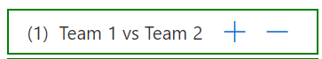

Making tournament brackets like this one can be tedious -- you have to figure out which games have to play on which days, and you get bogged down in making sure the formatting works and that you don't cross the lines. It doesn't help that the recommended double-elimination brackets for Little League can be a little hard to follow.
Bracket Builder addresses all of these problems. Every game in the bracket conforms to the double-elimination bracket, and every time you add a game, it will format the cells to connect the games. It will even adjust your entire bracket to avoid the most common bracket building headaches, namely things like reordering games to make games fit without crossing lines.
When your bracket is built and you have applied the finishing touches, you can add scores to the bracket and the team names will automatically fill in as you progress through the bracket. This is very helpful if you want to export the bracket to a PDF and post it to the web to keep everyone up to date.
Go through these help topics to first get started with your first bracket, and then dive into the advanced topics to learn how to tweak your bracket without breaking things.
First, a note able these brackets and their compatibility. This add-in creates double-elimination tournament brackets that conform to Little League's Approved Double Elimination Tournament Brackets. If you intend to use these for a Little League tournament, remember they must still be approved in order to be used in the Little League tournament. This add-in just helps you create and format the bracket.

Ok, there's a lot of details we could go into, but let's just do a quick walk-through to get you used to it.
- Create a new workbook and insert the Add-In (Insert Tab, Get Add-ins, My Organization, BracketBuilder)
- Choose "9 Team" and click Build a bracket to setup your workbook.
- Select D6 and type "6/25/22" - this is the start of our tournament (notice that all the dates changed for the rest of the tournament)
- Select cell D7 (because we want to insert on Saturday 6/25)
-
Insert game 1 (Click "+" for game 1
 - Insert game 2
- Insert game 3
- Insert game 4
- Select cell G7 (so we insert games on 6/26 now)
- Insert game 5 (notice that the grid adjusted to make space for the game)
- Insert game 6 (since G1 and G2 played on Saturday)
- Insert game 9
At this point, we can't fit any more games on Sunday because G7 requires G5, G8 requires G6, and G10 requires G5. Since G5 and G6 play on Sunday, we can't play G7, G8, or G10 until Monday.
- Select J7 (for Monday)
- Insert game 7
- Insert game 8
- Insert game 10
-
Click Undo

- (Make sure J7 is still selected)
- Insert game 8
- Insert game 7
- Insert game 10
- Select M7 (for Tuesday)
- Insert game 11
- Insert game 12
- Select P7
- Insert game 13
- Insert game 14
- Select S7
- Insert game 15
- Select V7
- Insert game 16
- Select Y7
- Insert game 17
- Select AB7
- Insert champion (game 18)
At this point, the bracket is done. Now let's go back and fix the team names. Go to the TeamsAndFields sheet. Fill out the team names for the bracket (fill in cells B23 to B31with team names).
Now back on the Games sheet, you can click on each "Field #1" or "6:00 PM" and put the correct field and time. (You could also do this on the TeamsAndFields sheet).
Lastly, let's fill in some tournament information. Go to the "TournamentInfo" sheet:

- Select B1, enter "9 Team Tournament"
- Select B2, enter "Sample Walkthrough"
- Select B3, enter "Al Houghton Stadium"
- Select B4, enter "Little League Dr, San Bernardino, CA
- Select B5, enter "Little League"
And the final step is to apply the finishing touches to the bracket:
-
Click on the
Finishing Touches
(

This detailed start will build the same bracket that we built in the QuickStart, but we will go a little further in depth as we build it
The first thing you have to do is build the bracket workbook.
Once you click "Build a bracket", your workbook will be setup to start building out your bracket.

Most of our time will be spent on the
If you want more information on all of the items on the
For now, let's get familiar with the bracket and how it's built.
This grid is carefully constructed to allow lines to connect games and create visual affects. You can change things like row height and column widths, but don't change the pattern.
- Rows are in pairs: a full height row for text, and a 1 pixel row for lines. You can see this when you look at the row numbers on the left side -- they seem to count by twos in the grid (10, 12, 14, 16). The odd number rows aren't missing, they are just really short. Those short rows give us the lines.
- Columns are in threes: A wide column for team names, a narrow column for game score, and a 1 pixel column for lines. Notice that the column with "Team 1" in it is wider than the score column next to it. The line column is even smaller.
Each game has several components.
All games have a top and bottom team name. If these are first round games, then the seeded team name will be entered. By default these will say "Team 1", etc. You can either type in the correct team name, or you can go to the "TeamsAndFields" sheet and fill in the team names there. Either way, the team names will automatically update throughout the bracket as you enter scores into the bracket.
The Game Info Block has the field number, game time, and any special text (like "Loser to T6"). To change the field or time of the game, you can either type the correct information directly into the block, or you can go to the "TeamsAndFields" sheet and fill in the game information there (just look up the game number). Either way, the actual game information on the "TeamsAndFields" sheet will automatically update to match what the grid says. (This makes it easy to bulk-upload the games to something like ArbiterSports when the bracket has been constructed).
The game number block is just a merged set of cells with the game number in it ("G2", "G3", etc.)
Selecting
When we talk about choosing a place to insert a game, or choosing a day to insert a game into, you should always be putting your selection in the widest column -- the one that the team names go into.
When we talk about selecting a game,you should select the top and bottom team names, AND include the line on the right (it is tricky to select without using Shift+Right Arrow

Once you have chosen the size of your bracket, you will see a list of games that need to be placed in your bracket. The games that are shaded gray are already in your bracket, but you can still remove them by clicking the "-" button. The games that are not shaded still need to be placed in your grid.
In many cases, the add-in can automagically place the game for you. For first-round games, it will choose the next available spot on the day you choose. As you get further in the bracket it will place games where they have to go in order for the lines to work. In some cases, where the grid has to be reorganized, it will even fixup the grid to make things work.
To insert a game automagically, just select a cell in the day where you want the game. Its usually best to select a cell close to the top of the column so its clear you aren't trying to manually place the game. Then just click the "+" next to the game you want to insert.
Well, its not perfect. If you catch the mistake early (before you insert
other games), you can just undo what you just did.
Don't use
Excel's undo
. Use the undo button in the task pane:
(You can also use
redo to undo what you undid). You should be able to undo multiple things
by clicking undo again. If clicking undo doesn't do anything, then you
will have to remove the games manually
To remove a game manually, first try just clicking the "-" next to the
game you are trying to remove. If that doesn't work, then select the game
in the grid and click the "Remove Game" button: